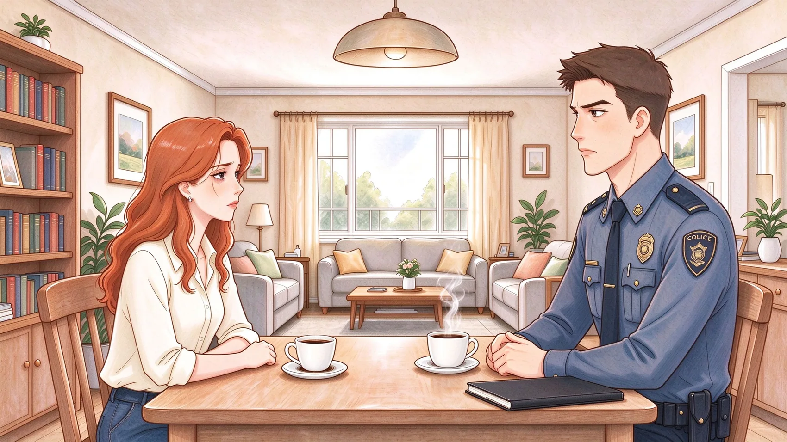

PROJECT 01 休闲合成 × 剧情解谜
2026 · GODOT 4.7Ever After Hotel
从此以后，故事如何继续？

CHAPTER 01 · 丈夫失踪第三十天丈夫失踪后，克莱尔循着一本缺页的童话书来到海边旅店。她要找的人，藏在那些“幸福结局之后”仍在生活的故事里。
我独立策划并开发可玩 Demo，将调查线索嵌入合成任务：整理书桌不是单纯清除障碍，而是亲手确认亚瑟没有打算离家；修复旅店，也是打开童话世界道路的方式。
7 × 7合成棋盘
6 条四级合成链
4 个生成器
DESIGN FOCUS
让操作成为推理，让修复成为叙事推进。
点击画面，可完整查看实机图 ↗PLAYABLE NARRATIVE NOTE / CASE 30
0 / 3 已检视亲手确认：亚瑟真的离开了吗？
在开场调查中，玩家通过检视物件，而不是听角色直接说明答案。试着翻开三份线索。
横向滑动，查看全部线索调查档案 · 第三十天
选择一件留在家中的物品。每个普通的生活细节，都可能推翻“他主动离开”的解释。
“他带了三件衬衫，却忘了带晚上看书必须用的眼镜。”
克莱尔开始相信：亚瑟原本只打算离开几天。
克莱尔 CLAIRE
“亚瑟，你到底留下了什么？”
点击线索，听见她的推断 ◆